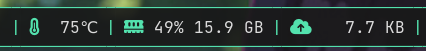
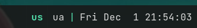
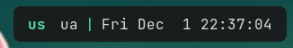
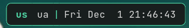
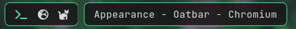
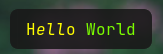
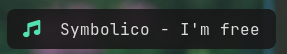
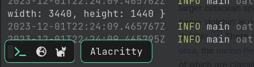

Appearance
This section focuses on recipes on how to display the data from your sources.
Separators
Simple separator

Separator is just a text block.
[[bar]]
blocks_left=["foo", "S", "bar", "S", "baz"]
[[block]]
name="S"
type = 'text'
separator_type = 'gap'
value = '|'
foreground = "#53e2ae"
This approach offers maximum flexibility:
- Multiple separator types and styles
- Dynamically separators based on conditions
- Disappearing separators via
show_if_matches
Specifying separator_type = "gap" is recommended. It gives oatbar a hint that the block is
a separator. For example multiple separators in a row do not make sense and
they will collapse if real blocks between them become hidden.
Empty space around bar
By default oatbar looks more traditional.

You can apply margins and border-lines to achieve some empty space around your bar.

[[bar]]
blocks_right=["L", "layout", "S", "clock", "R"]
# `top` may need a value or must be zero depening on your WM.
margin={left=8, right=8, top=0, bottom=8}
# Alpha channels is zero, so the bar is transparent unless there is has a block.
background="#00000000"
[[default_block]]
# The actual block color.
background="#191919e6"
[[block]]
name='L'
type = 'text'
separator_type = 'left'
separator_radius = 8.0
[[block]]
name='R'
type = 'text'
separator_type = 'right'
separator_radius = 8.0
Border lines

# Or per [[block]] separately.
[[default_block]]
edgeline_color = "#53e2ae"
overline_color = "#53e2ae"
underline_color = "#53e2ae"
# edgeline applies to `left` and `right` blocks.
[[block]]
name='L'
type = 'text'
separator_type = 'left'
separator_radius = 8.0
[[block]]
name='R'
type = 'text'
separator_type = 'right'
separator_radius = 8.0
Partial bar
Bars of oatbar can be further separated to small partial bars. It is possible
to by further use of L and R bars and addition of completely transparent E block.

[[bar]]
blocks_left=["L", "workspace", "R", "E", "L", "active_window", "R"]
[[block]]
name="E"
type = 'text'
separator_type = 'gap'
value = ' '
background = "#00000000"
# If you have set these in [[default_block]], reset them back.
edgeline_color = ""
overline_color = ""
underline_color = ""
Setting separator_type correctly for all separators will make partial panel
disappearing if all real blocks are hidden via show_if_matches.
Blocks
Pango markup
oatbar supports full Pango Markup
as a main tool to format the block content. Command can emit Pango markup too, controlling
the appearance of the blocks.

[[block]]
name='pango'
type = 'text'
value = "<span text_transform='capitalize' color='yellow'>h<i>ell</i>o</span> <span color='lawngreen'>World</span>"
Font names to be used in Pango can be looked up via the fc-list command.
Icons
Use icon fonts such as Font Awesome, Nerd Fonts, IcoMoon or emojis.

[[block]]
name='pango'
type = 'text'
value = "<span ${green_icon}></span> Symbolico - I'm free"
[[var]]
name="green_icon"
value="font='Font Awesome 6 Free 13' foreground='#53e2ae'"
Some icon fonts use ligatures instead of emojis, replacing words with icons like this:
value = "<span ${green_icon}>music</span> Symbolico - I'm free"
If your icon does not perfectly vertically align with your text, experiment with font size and rise Pango parameter.
Visibility
show_if_matches combined with a powerful tool to build dynamic bars.
Here it is used to only show the block if the value is not empty.
[block]
value = '${desktop:window_title.value}'
show_if_matches = [['${desktop:window_title.value}', '.+']]
Custom variables, not only those coming from commands can be used. They can be
set via oatctl var set, opening a huge number of possibilities. See some examples in
the Advanced chapter.
If you are not an expert in regular expressions, here are some useful ones:
| Regex | Meaning |
|---|---|
foo | Contains foo |
^foo | Starts with foo |
foo$ | Ends with foo |
^foo$ | Exactly foo |
^$ | Empty string |
.+ | Non empty string |
(foo|bar|baz) | Contains one of those words |
^(foo|bar|baz)$ | Exactly one of those words |
In the examples above foo works because it only contains alpha-numeric characters,
but be careful with including characters that have special meaning in regular expressions.
For more info read regex crate documentation.
Popup bars
A bar can be hidden and appear when certain conditions are met.
[[bar]]
popup=true
Popup bars appear on the top of the windows, unlike normal bars that allocate dedicated space on the screen.

Popup at cursor
Popup bar can be shown when the cursor approaches the screen edge where the bar is located.
[[bar]]
popup=true
popup_at_edge=true
Temporary popup on block change
When any property of the block changes you can make it appear. Depending on a popup
value you can show enclosing partial or entire bar.
[[bar]]
popup="bar"
#popup="partial_bar"
#popup="block"
If you won't want to popup on any property change, you can limit it to one expression.
[[bar]]
popup_value="${foo}"
Example layout switcher that appears in the middle of the screen when you change your layout.
[[bar]]
blocks_center=["L", "layout_enum_center", "R"]
background="#00000000"
popup=true
position="center"
[[block]]
name = 'layout_enum_center'
type = 'enum'
active = '${keyboard:layout.active}'
variants = '${keyboard:layout.variants}'
popup = "block"